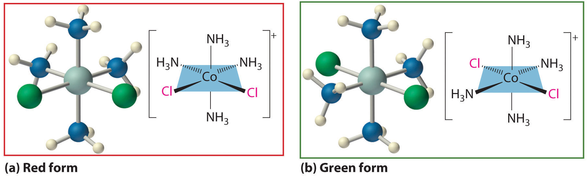

One of the most important properties of metallic elements is their ability to act as Lewis acids that form complexes with a variety of Lewis bases. A metal complexA chemical compound composed of a central metal atom or ion bonded to one or more ligands. consists of a central metal atom or ion that is bonded to one or more ligandsAn ion or a molecule that contains one or more pairs of electrons that can be shared with the central metal in a metal complex. (from the Latin ligare, meaning “to bind”), which are ions or molecules that contain one or more pairs of electrons that can be shared with the metal. Metal complexes can be neutral, such as Co(NH3)3Cl3; positively charged, such as [Nd(H2O)9]3+; or negatively charged, such as [UF8]4−. Electrically charged metal complexes are sometimes called complex ionsAn ionic species formed between a central metal ion and one or more surrounding ligands because of a Lewis acid–base interaction.. A coordination compoundA chemical compound with one or more metal complexes. contains one or more metal complexes.
Coordination compounds are important for at least three reasons. First, most of the elements in the periodic table are metals, and almost all metals form complexes, so metal complexes are a feature of the chemistry of more than half the elements. Second, many industrial catalysts are metal complexes, and such catalysts are steadily becoming more important as a way to control reactivity. For example, a mixture of a titanium complex and an organometallic compound of aluminum is the catalyst used to produce most of the polyethylene and polypropylene “plastic” items we use every day. Finally, transition-metal complexes are essential in biochemistry. Examples include hemoglobin, an iron complex that transports oxygen in our blood; cytochromes, iron complexes that transfer electrons in our cells; and complexes of Fe, Zn, Cu, and Mo that are crucial components of certain enzymes, the catalysts for all biological reactions. Metal complexes are so important in biology that we consider the topic separately in Section 23.6 "Transition Metals in Biology".
Coordination compounds have been known and used since antiquity; probably the oldest is the deep blue pigment called Prussian blue: KFe2(CN)6. The chemical nature of these substances, however, was unclear for a number of reasons. For example, many compounds called “double salts” were known, such as AlF3·3KF, Fe(CN)2·4KCN, and ZnCl2·2CsCl, which were combinations of simple salts in fixed and apparently arbitrary ratios. Why should AlF3·3KF exist but not AlF3·4KF or AlF3·2KF? And why should a 3:1 KF:AlF3 mixture have different chemical and physical properties than either of its components? Similarly, adducts of metal salts with neutral molecules such as ammonia were also known—for example, CoCl3·6NH3, which was first prepared sometime before 1798. Like the double salts, the compositions of these adducts exhibited fixed and apparently arbitrary ratios of the components. For example, CoCl3·6NH3, CoCl3·5NH3, CoCl3·4NH3, and CoCl3·3NH3 were all known and had very different properties, but despite all attempts, chemists could not prepare CoCl3·2NH3 or CoCl3·NH3.
The Great Wave Off Kanagawa. The Japanese artist Katsushika Hokusai used Prussian blue to create this famous woodcut.
Although the chemical composition of such compounds was readily established by existing analytical methods, their chemical nature was puzzling and highly controversial. The major problem was that what we now call valence (i.e., the oxidation state) and coordination number were thought to be identical. As a result, highly implausible (to modern eyes at least) structures were proposed for such compounds, including the “Chattanooga choo-choo” model for CoCl3·4NH3 shown here.
The modern theory of coordination chemistry is based largely on the work of Alfred Werner (1866–1919; Nobel Prize in Chemistry in 1913). In a series of careful experiments carried out in the late 1880s and early 1890s, he examined the properties of several series of metal halide complexes with ammonia. For example, five different “adducts” of ammonia with PtCl4 were known at the time: PtCl4·nNH3 (n = 2–6). Some of Werner’s original data on these compounds are shown in Table 23.8 "Werner’s Data on Complexes of Ammonia with PtCl". The electrical conductivity of aqueous solutions of these compounds was roughly proportional to the number of ions formed per mole, while the number of chloride ions that could be precipitated as AgCl after adding Ag+(aq) was a measure of the number of “free” chloride ions present. For example, Werner’s data on PtCl4·6NH3 in Table 23.8 "Werner’s Data on Complexes of Ammonia with PtCl" showed that all the chloride ions were present as free chloride. In contrast, PtCl4·2NH3 was a neutral molecule that contained no free chloride ions.
Werner, the son of a factory worker, was born in Alsace. He developed an interest in chemistry at an early age, and he did his first independent research experiments at age 18. While doing his military service in southern Germany, he attended a series of chemistry lectures, and he subsequently received his PhD at the University of Zurich in Switzerland, where he was appointed professor of chemistry at age 29. He won the Nobel Prize in Chemistry in 1913 for his work on coordination compounds, which he performed as a graduate student and first presented at age 26. Apparently, Werner was so obsessed with solving the riddle of the structure of coordination compounds that his brain continued to work on the problem even while he was asleep. In 1891, when he was only 25, he woke up in the middle of the night and, in only a few hours, had laid the foundation for modern coordination chemistry.
Table 23.8 Werner’s Data on Complexes of Ammonia with PtCl4
| Complex | Conductivity (ohm−1) | Number of Ions per Formula Unit | Number of Cl− Ions Precipitated by Ag+ |
|---|---|---|---|
| PtCl4·6NH3 | 523 | 5 | 4 |
| PtCl4·5NH3 | 404 | 4 | 3 |
| PtCl4·4NH3 | 299 | 3 | 2 |
| PtCl4·3NH3 | 97 | 2 | 1 |
| PtCl4·2NH3 | 0 | 0 | 0 |
These data led Werner to postulate that metal ions have two different kinds of valence: (1) a primary valence (oxidation state) that corresponds to the positive charge on the metal ion and (2) a secondary valence (coordination number) that is the total number of ligands bound to the metal ion. If Pt had a primary valence of 4 and a secondary valence of 6, Werner could explain the properties of the PtCl4·NH3 adducts by the following reactions, where the metal complex is enclosed in square brackets:
Equation 23.9
Further work showed that the two missing members of the series—[Pt(NH3)Cl5]− and [PtCl6]2−—could be prepared as their mono- and dipotassium salts, respectively. Similar studies established coordination numbers of 6 for Co3+ and Cr3+ and 4 for Pt2+ and Pd2+.
Werner’s studies on the analogous Co3+ complexes also allowed him to propose a structural model for metal complexes with a coordination number of 6. Thus he found that [Co(NH3)6]Cl3 (yellow) and [Co(NH3)5Cl]Cl2 (purple) were 1:3 and 1:2 electrolytes. Unexpectedly, however, two different [Co(NH3)4Cl2]Cl compounds were known: one was red, and the other was green (part (a) in Figure 23.9 "Complexes with Different Arrangements of the Same Ligands Have Different Properties"). Because both compounds had the same chemical composition and the same number of groups of the same kind attached to the same metal, there had to be something different about the arrangement of the ligands around the metal ion. Werner’s key insight was that the six ligands in [Co(NH3)4Cl2]Cl had to be arranged at the vertices of an octahedron because that was the only structure consistent with the existence of two, and only two, arrangements of ligands (part (b) in Figure 23.9 "Complexes with Different Arrangements of the Same Ligands Have Different Properties"). His conclusion was corroborated by the existence of only two different forms of the next compound in the series: Co(NH3)3Cl3.
Figure 23.9 Complexes with Different Arrangements of the Same Ligands Have Different Properties
The [Co(NH3)4Cl2]+ ion can have two different arrangements of the ligands, which results in different colors: if the two Cl− ligands are next to each other, the complex is red (a), but if they are opposite each other, the complex is green (b).
In Werner’s time, many complexes of the general formula MA4B2 were known, but no more than two different compounds with the same composition had been prepared for any metal. To confirm Werner’s reasoning, calculate the maximum number of different structures that are possible for six-coordinate MA4B2 complexes with each of the three most symmetrical possible structures: a hexagon, a trigonal prism, and an octahedron. What does the fact that no more than two forms of any MA4B2 complex were known tell you about the three-dimensional structures of these complexes?
Given: three possible structures and the number of different forms known for MA4B2 complexes
Asked for: number of different arrangements of ligands for MA4B2 complex for each structure
Strategy:
Sketch each structure, place a B ligand at one vertex, and see how many different positions are available for the second B ligand.
Solution:
The three regular six-coordinate structures are shown here, with each coordination position numbered so that we can keep track of the different arrangements of ligands. For each structure, all vertices are equivalent. We begin with a symmetrical MA6 complex and simply replace two of the A ligands in each structure to give an MA4B2 complex:
For the hexagon, we place the first B ligand at position 1. There are now three possible places for the second B ligand: at position 2 (or 6), position 3 (or 5), or position 4. These are the only possible arrangements. The (1, 2) and (1, 6) arrangements are chemically identical because the two B ligands are adjacent to each other. The (1, 3) and (1, 5) arrangements are also identical because in both cases the two B ligands are separated by an A ligand.
Turning to the trigonal prism, we place the first B ligand at position 1. Again, there are three possible choices for the second B ligand: at position 2 or 3 on the same triangular face, position 4 (on the other triangular face but adjacent to 1), or position 5 or 6 (on the other triangular face but not adjacent to 1). The (1, 2) and (1, 3) arrangements are chemically identical, as are the (1, 5) and (1, 6) arrangements.
In the octahedron, however, if we place the first B ligand at position 1, then we have only two choices for the second B ligand: at position 2 (or 3 or 4 or 5) or position 6. In the latter, the two B ligands are at opposite vertices of the octahedron, with the metal lying directly between them. Although there are four possible arrangements for the former, they are chemically identical because in all cases the two B ligands are adjacent to each other.
The number of possible MA4B2 arrangements for the three geometries is thus: hexagon, 3; trigonal prism, 3; and octahedron, 2. The fact that only two different forms were known for all MA4B2 complexes that had been prepared suggested that the correct structure was the octahedron but did not prove it. For some reason one of the three arrangements possible for the other two structures could have been less stable or harder to prepare and had simply not yet been synthesized. When combined with analogous results for other types of complexes (e.g., MA3B3), however, the data were best explained by an octahedral structure for six-coordinate metal complexes.
Exercise
Determine the maximum number of structures that are possible for a four-coordinate MA2B2 complex with either a square planar or a tetrahedral symmetrical structure.
Answer: square planar, 2; tetrahedral, 1
The coordination numbers of metal ions in metal complexes can range from 2 to at least 9. In general, the differences in energy between different arrangements of ligands are greatest for complexes with low coordination numbers and decrease as the coordination number increases. Usually only one or two structures are possible for complexes with low coordination numbers, whereas several different energetically equivalent structures are possible for complexes with high coordination numbers (n > 6). The following presents the most commonly encountered structures for coordination numbers 2–9. Many of these structures should be familiar to you from our discussion of the valence-shell electron-pair repulsion (VSEPR) model in Chapter 9 "Molecular Geometry and Covalent Bonding Models" because they correspond to the lowest-energy arrangements of n electron pairs around a central atom.
Compounds with low coordination numbers exhibit the greatest differences in energy between different arrangements of ligands.
Although it is rare for most metals, this coordination number is surprisingly common for d10 metal ions, especially Cu+, Ag+, Au+, and Hg2+. An example is the [Au(CN)2]− ion, which is used to extract gold from its ores, as described in Section 23.3 "Metallurgy". As expected based on VSEPR considerations, these complexes have the linear L–M–L structure shown here.
Although it is also rare, this coordination number is encountered with d10 metal ions such as Cu+ and Hg2+. Among the few known examples is the HgI3− ion. Three-coordinate complexes almost always have the trigonal planar structure expected from the VSEPR model.
Two common structures are observed for four-coordinate metal complexes: tetrahedral and square planar. The tetrahedral structure is observed for all four-coordinate complexes of nontransition metals, such as [BeF4]2−, and d10 ions, such as [ZnCl4]2−. It is also found for four-coordinate complexes of the first-row transition metals, especially those with halide ligands (e.g., [FeCl4]− and [FeCl4]2−). In contrast, square planar structures are routinely observed for four-coordinate complexes of second- and third-row transition metals with d8 electron configurations, such as Rh+ and Pd2+, and they are also encountered in some complexes of Ni2+ and Cu2+.
This coordination number is less common than 4 and 6, but it is still found frequently in two different structures: trigonal bipyramidal and square pyramidal. Because the energies of these structures are usually rather similar for most ligands, many five-coordinate complexes have distorted structures that lie somewhere between the two extremes.
This coordination number is by far the most common. The six ligands are almost always at the vertices of an octahedron or a distorted octahedron. The only other six-coordinate structure is the trigonal prism, which is very uncommon in simple metal complexes.
This relatively uncommon coordination number is generally encountered for only large metals (such as the second- and third-row transition metals, lanthanides, and actinides). At least three different structures are known, two of which are derived from an octahedron or a trigonal prism by adding a ligand to one face of the polyhedron to give a “capped” octahedron or trigonal prism. By far the most common, however, is the pentagonal bipyramid.
This coordination number is relatively common for larger metal ions. The simplest structure is the cube, which is rare because it does not minimize interligand repulsive interactions. Common structures are the square antiprism and the dodecahedron, both of which can be generated from the cube.
This coordination number is found in larger metal ions, and the most common structure is the tricapped trigonal prism, as in [Nd(H2O)9]3+.
The thermodynamic stability of a metal complex depends greatly on the properties of the ligand and the metal ion and on the type of bonding. Recall that the metal–ligand interaction is an example of a Lewis acid–base interaction. Lewis bases can be divided into two categories: hard basesA type of Lewis base with small, relatively nonpolarizable donor atoms., which contain small, relatively nonpolarizable donor atoms (such as N, O, and F), and soft basesA type of Lewis base with large, relatively polarizable donor atoms., which contain larger, relatively polarizable donor atoms (such as P, S, and Cl). Metal ions with the highest affinities for hard bases are hard acidsAn acid with the highest affinity for hard bases. It is relatively nonpolarizable and has a relatively high charge-to-radius ratio., whereas metal ions with the highest affinity for soft bases are soft acidsAn acid with the highest affinity for soft bases. It tends to be a cation of a less electropositive metal.. Some examples of hard and soft acids and bases are given in Table 23.9 "Examples of Hard and Soft Acids and Bases". Notice that hard acids are usually cations of electropositive metals; consequently, they are relatively nonpolarizable and have higher charge-to-radius ratios. Conversely, soft acids tend to be cations of less electropositive metals; consequently, they have lower charge-to-radius ratios and are more polarizable. Chemists can predict the relative stabilities of complexes formed by the d-block metals with a remarkable degree of accuracy by using a simple rule: hard acids prefer to bind to hard bases, and soft acids prefer to bind to soft bases.
Table 23.9 Examples of Hard and Soft Acids and Bases
| Acids | Bases | |
|---|---|---|
| hard | H+ | NH3, RNH2, N2H4 |
| Li+, Na+, K+ | H2O, ROH, R2O | |
| Be2+, Mg2+, Ca2+, VO2+ | OH−, F−, Cl−, CH3CO2− | |
| Al3+, Sc3+, Cr3+ | CO32− | |
| Ti4+ | PO43− | |
| soft | BF3, Al2Cl6, CO2, SO3 | |
| Cu+, Ag+, Au+, Tl+, Hg22+ | H− | |
| Pd2+, Pt2+, Hg2+ | CN−, SCN−, I−, RS− | |
| GaCl3, GaBr3, GaI3 | CO, R2S |
Because the interaction between hard acids and hard bases is primarily electrostatic in nature, the stability of complexes involving hard acids and hard bases increases as the positive charge on the metal ion increases and as its radius decreases. For example, the complex of Al3+ (r = 53.5 pm) with four fluoride ligands (AlF4−) is about 108 times more stable than InF4−, the corresponding fluoride complex of In3+ (r = 80 pm). In general, the stability of complexes of divalent first-row transition metals with a given ligand varies inversely with the radius of the metal ion, as shown in the following series:The inversion in the order at copper is due to the anomalous structure of copper(II) complexes, which will be discussed shortly.
Because a hard metal interacts with a base in much the same way as a proton, by binding to a lone pair of electrons on the base, the stability of complexes of hard acids with hard bases increases as the ligand becomes more basic. For example, because ammonia is a stronger base than water, metal ions bind preferentially to ammonia. Consequently, adding ammonia to aqueous solutions of many of the first-row transition-metal cations results in the formation of the corresponding ammonia complexes.
In contrast, the interaction between soft metals (such as the second- and third-row transition metals and Cu+) and soft bases is largely covalent in nature. Most soft-metal ions have a filled or nearly filled d subshell, which suggests that metal-to-ligand π bonding is important. Complexes of soft metals with soft bases are therefore much more stable than would be predicted based on electrostatic arguments.
Hard acids prefer to bind to hard bases, and soft acids prefer to bind to soft bases.
The hard acid–hard base/soft acid–soft base concept also allows us to understand why metals are found in nature in different kinds of ores. Recall from Section 23.2 "A Brief Survey of Transition-Metal Chemistry" that most of the first-row transition metals are isolated from oxide ores but that copper and zinc tend to occur naturally in sulfide ores. This is consistent with the increase in the soft character of the metals across the first row of the transition metals from left to right. Recall also that most of the second- and third-row transition metals occur in nature as sulfide ores, consistent with their greater soft character.
Ligands like chloride, water, and ammonia are said to be monodentate (one-toothed, from the Greek mono, meaning “one,” and the Latin dent-, meaning “tooth”): they are attached to the metal via only a single atom. Ligands can, however, be bidentate (two-toothed, from the Greek di, meaning “two”), tridentate (three-toothed, from the Greek tri, meaning “three”), or, in general, polydentate (many-toothed, from the Greek poly, meaning “many”), indicating that they are attached to the metal at two, three, or several sites, respectively. Ethylenediamine (H2NCH2CH2NH2, often abbreviated as en) and diethylenetriamine (H2NCH2CH2NHCH2CH2NH2, often abbreviated as dien) are examples of a bidentate and a tridentate ligand, respectively, because each nitrogen atom has a lone pair that can be shared with a metal ion. When a bidentate ligand such as ethylenediamine binds to a metal such as Ni2+, a five-membered ring is formed. A metal-containing ring like that shown is called a chelate ring (from the Greek chele, meaning “claw”). Correspondingly, a polydentate ligand is a chelating agent, and complexes that contain polydentate ligands are called chelate complexes.
Experimentally, it is observed that metal complexes of polydentate ligands are significantly more stable than the corresponding complexes of chemically similar monodentate ligands; this increase in stability is called the chelate effect. For example, the complex of Ni2+ with three ethylenediamine ligands, [Ni(en)3]2+, should be chemically similar to the Ni2+ complex with six ammonia ligands, [Ni(NH3)6]2+. In fact, the equilibrium constant for the formation of [Ni(en)3]2+ is almost 10 orders of magnitude larger than the equilibrium constant for the formation of [Ni(NH3)6]2+:
Equation 23.10
Chelate complexes are more stable than the analogous complexes with monodentate ligands.
The stability of a chelate complex depends on the size of the chelate rings. For ligands with a flexible organic backbone like ethylenediamine, complexes that contain five-membered chelate rings, which have almost no strain, are significantly more stable than complexes with six-membered chelate rings, which are in turn much more stable than complexes with four- or seven-membered rings. For example, the complex of copper(II) with two ethylenediamine ligands is about 1000 times more stable than the corresponding complex with triethylenediamine (H2NCH2CH2CH2NH2, abbreviated as trien):
Equation 23.11
Arrange [Cr(en)3]3+, [CrCl6]3−, [CrF6]3−, and [Cr(NH3)6]3+ in order of increasing stability.
Given: four Cr(III) complexes
Asked for: relative stabilities
Strategy:
A Determine the relative basicity of the ligands to identify the most stable complexes.
B Decide whether any complexes are further stabilized by a chelate effect and arrange the complexes in order of increasing stability.
Solution:
A The metal ion is the same in each case: Cr3+. Consequently, we must focus on the properties of the ligands to determine the stabilities of the complexes. Because the stability of a metal complex increases as the basicity of the ligands increases, we need to determine the relative basicity of the four ligands. Our earlier discussion of acid–base properties suggests that ammonia and ethylenediamine, with nitrogen donor atoms, are the most basic ligands. The fluoride ion is a stronger base (it has a higher charge-to-radius ratio) than chloride, so the order of stability expected due to ligand basicity is [CrCl6]3− < [CrF6]3− < [Cr(NH3)6]3+ ≈ [Cr(en)3]3+.
B Because of the chelate effect, we expect ethylenediamine to form a stronger complex with Cr3+ than ammonia. Consequently, the likely order of increasing stability is [CrCl6]3− < [CrF6]3− < [Cr(NH3)6]3+ < [Cr(en)3]3+.
Exercise
Arrange [Co(NH3)6]3+, [CoF6]3−, and [Co(en)3]3+ in order of decreasing stability.
Answer: [Co(en)3]3+ > [Co(NH3)6]3+ > [CoF6]3−
As we discussed earlier in this section, the existence of coordination compounds with the same formula but different arrangements of the ligands was crucial in the development of coordination chemistry. Two or more compounds with the same formula but different arrangements of the atoms are called isomersTwo or more compounds with the same molecular formula but different arrangements of their atoms.. Because isomers usually have different physical and chemical properties, it is important to know which isomer we are dealing with if more than one isomer is possible. Recall from Chapter 2 "Molecules, Ions, and Chemical Formulas" that in many cases more than one structure is possible for organic compounds with the same molecular formula; examples discussed previously include n-butane versus isobutane and cis-2-butene versus trans-2-butene. As we will see, coordination compounds exhibit the same types of isomers as organic compounds, as well as several kinds of isomers that are unique. (For more information on isomers in organic compounds, see Chapter 24 "Organic Compounds", Section 24.2 "Isomers of Organic Compounds".)
Isomers that contain the same number of atoms of each kind but differ in which atoms are bonded to one another are called structural isomersTwo or more compounds that have the same molecular formula but differ in which atoms are bonded to one another.. Isobutane and n-butane are examples of structural isomers. One kind of isomerism consists of two compounds that have the same empirical formula but differ in the number of formula units present in the molecular formula. An example in coordination compounds is two compounds with the empirical formula Pt(NH3)2Cl2. One is a simple square planar platinum(II) complex, Pt(NH3)2Cl2, and the other is an ionic compound that contains the [Pt(NH3)4]2+ cation and the [PtCl4]2− anion, [Pt(NH3)4][PtCl4]. As you might expect, these compounds have very different physical and chemical properties. One arrangement of the Cl− and NH3 ligands around the platinum ion in the former gives the anticancer drug cisplatin, whereas the other arrangement has no known biomedical applications.
Metal complexes that differ only in which ligands are adjacent to one another (cisA type of geometrical isomer in which the ligands or the substituents are adjacent to one another in a rigid molecule or a metal complex.) or directly across from one another (transA type of geometrical isomer in which the ligands or the substituents are directly across from each other in a rigid molecule or a metal complex.) in the coordination sphere of the metal are called geometrical isomersComplexes that differ only in which ligands are adjacent to one another or directly across from one another in the coordination sphere of a metal.. They are most important for square planar and octahedral complexes.
Because all vertices of a square are equivalent, it does not matter which vertex is occupied by the ligand B in a square planar MA3B complex; hence only a single geometrical isomer is possible in this case (and in the analogous MAB3 case). All four structures shown here are chemically identical because they can be superimposed simply by rotating the complex in space:
For an MA2B2 complex, there are two possible isomers: either the A ligands can be adjacent to one another (cis), in which case the B ligands must also be cis, or the A ligands can be across from one another (trans), in which case the B ligands must also be trans. Even though it is possible to draw the cis isomer in four different ways and the trans isomer in two different ways, all members of each set are chemically equivalent:
Because there is no way to convert the cis structure to the trans by rotating or flipping the molecule in space, they are fundamentally different arrangements of atoms in space. Probably the best-known examples of cis and trans isomers of an MA2B2 square planar complex are cis-Pt(NH3)2Cl2, also known as cisplatin, and trans-Pt(NH3)2Cl2, which is actually toxic rather than therapeutic.
The anticancer drug cisplatin and its inactive trans isomer. Cisplatin is especially effective against tumors of the reproductive organs (the testes in males and the ovaries in females), which primarily affect individuals in their 20s and were notoriously difficult to cure. For example, after being diagnosed with metastasized testicular cancer in 1991 and given only a 50% chance of survival, Lance Armstrong was cured by treatment with cisplatin and went on to win an unprecedented seven Tour de France bicycle races.
Square planar complexes that contain symmetrical bidentate ligands, such as [Pt(en)2]2+, have only one possible structure, in which curved lines linking the two N atoms indicate the ethylenediamine ligands:
Octahedral complexes also exhibit cis and trans isomers. Like square planar complexes, only one structure is possible for octahedral complexes in which only one ligand is different from the other five (MA5B). Even though we usually draw an octahedron in a way that suggests that the four “in-plane” ligands are different from the two “axial” ligands, in fact all six vertices of an octahedron are equivalent. Consequently, no matter how we draw an MA5B structure, it can be superimposed on any other representation simply by rotating the molecule in space. Two of the many possible orientations of an MA5B structure are as follows:
If two ligands in an octahedral complex are different from the other four, giving an MA4B2 complex, two isomers are possible. The two B ligands can be cis or trans. Cis- and trans-[Co(NH3)4Cl2]Cl are examples of this type of system:

Replacing another A ligand by B gives an MA3B3 complex for which there are also two possible isomers. In one, the three ligands of each kind occupy opposite triangular faces of the octahedron; this is called the facAn isomer in which three ligands occupy opposite triangular faces of an octahedron. isomer (for facial). In the other, the three ligands of each kind lie on what would be the meridian if the complex were viewed as a sphere; this is called the merAn isomer in which three ligands lie on a spherical meridian. isomer (for meridional):
Draw all the possible geometrical isomers for the complex [Co(H2O)2(ox)BrCl]−, where ox is −O2CCO2−, which stands for oxalate.
Given: formula of complex
Asked for: structures of geometrical isomers
Solution:
This complex contains one bidentate ligand (oxalate), which can occupy only adjacent (cis) positions, and four monodentate ligands, two of which are identical (H2O). The easiest way to attack the problem is to go through the various combinations of ligands systematically to determine which ligands can be trans. Thus either the water ligands can be trans to one another or the two halide ligands can be trans to one another, giving the two geometrical isomers shown here:
In addition, two structures are possible in which one of the halides is trans to a water ligand. In the first, the chloride ligand is in the same plane as the oxalate ligand and trans to one of the oxalate oxygens. Exchanging the chloride and bromide ligands gives the other, in which the bromide ligand is in the same plane as the oxalate ligand and trans to one of the oxalate oxygens:
This complex can therefore exist as four different geometrical isomers.
Exercise
Draw all the possible geometrical isomers for the complex [Cr(en)2(CN)2]+.
Answer:
Two geometrical isomers are possible: trans and cis.
Transition metals form metal complexes, polyatomic species in which a metal ion is bound to one or more ligands, which are groups bound to a metal ion. Complex ions are electrically charged metal complexes, and a coordination compound contains one or more metal complexes. Metal complexes with low coordination numbers generally have only one or two possible structures, whereas those with coordination numbers greater than six can have several different structures. Coordination numbers of two and three are common for d10 metal ions. Tetrahedral and square planar complexes have a coordination number of four; trigonal bipyramidal and square pyramidal complexes have a coordination number of five; and octahedral complexes have a coordination number of six. At least three structures are known for a coordination number of seven, which is generally found for only large metal ions. Coordination numbers of eight and nine are also found for larger metal ions. The stability of metal complexes with first-row transition metals in a +2 oxidation state varies inversely with their ionic radius. Lewis bases can be hard bases, which have small, relatively nonpolarizable donor atoms, or soft bases, with larger, relatively polarizable donor atoms. Hard acids have the highest affinity for hard bases, and soft acids have the highest affinity for soft bases. Soft metals and soft bases form complexes that are more stable than would be predicted based on electrostatic arguments, which suggests that metal-to-ligand π bonding is important. Ligands that are strong bases form the most stable complexes with metal ions that are hard acids. Exceptionally stable complexes are formed by chelates, which are polyatomic ligands with two or more donor atoms; this enhanced stability is known as the chelate effect. Many metal complexes form isomers, which are two or more compounds with the same formula but different arrangements of atoms. Structural isomers differ in which atoms are bonded to one another, while geometrical isomers differ only in the arrangement of ligands around the metal ion. Ligands adjacent to one another are cis, while ligands across from one another are trans.
Give two reasons a metal can bind to only a finite number of ligands. Based on this reasoning, what do you predict is the maximum coordination number of Ti? of Ac?
Can a tetrahedral MA2B2 complex form cis and trans isomers? Explain your answer.
The group 12 elements are never found in their native (free) form but always in combination with one other element. What element is this? Why? Which of the group 12 elements has the highest affinity for the element you selected?
The group 12 metals are rather soft and prefer to bind to a soft anion such as sulfide rather than to a hard anion like oxide; hence they are usually found in nature as sulfide ores. Because it is the softest of these metals, mercury has the highest affinity for sulfide.
Complexes of metals in the +6 oxidation state usually contain bonds to which two Lewis bases? Why are these bonds best described as covalent rather than ionic? Do Ca, Sr, and Ba also form covalent bonds with these two Lewis bases, or is their bonding best described as ionic?
Cr, Mn, Fe, Co, and Ni form stable CO complexes. In contrast, the earlier transition metals do not form similar stable complexes. Why?
The transition metals Cr through Ni form very stable cyanide complexes. Why are these complexes so much more stable than similar compounds formed from the early transition metals?
Of Co(en)33+, CoF63−, Co(NH3)63+, and Co(dien)23+, which species do you expect to be the most stable? Why?
Of Ca2+, Ti2+, V2+, Mn2+, Fe2+, Co2+, Ni2+, and Zn2+, which divalent metal ions forms the most stable complexes with ligands such as NH3? Why?
Match each Lewis base with the metal ions with which it is most likely to form a stable complex:
Lewis bases: NH3, F−, RS−, OH−, and Cl−
Metals: Sc3+, Cu+, W6+, Mg2+, V3+, Fe3+, Zr4+, Co2+, Ti4+, Au+, Al3+, and Mn7+
Of ReF2, ReCl5, MnF6, Mn2O7, and ReO, which are not likely to exist?
Of WF2, CrF6, MoBr6, WI6, CrO3, MoS2, W2S3, and MoH, which are not likely to exist?
Metals in the +6 oxidation state are stabilized by oxide (O2−) and fluoride (F−). The M−F and M−O bonds are polar covalent due to extreme polarization of the anions by the highly charged metal. Ca, Sr, and Ba can be oxidized only to the dications (M2+), which form ionic oxides and fluorides.
Cyanide is a relatively soft base, and the early transition-metal cations are harder acids than the later transition metals.
The formation of complexes between NH3 and a divalent cation is largely due to electrostatic interactions between the negative end of the ammonia dipole moment and the positively charged cation. Thus the smallest divalent cations (Ni2+, Zn2+, and Cu2+) will form the most stable complexes with ammonia.
Re2+ is a very soft cation, and F− and O2− are very hard bases, so ReO and ReF2 are unlikely to exist. MnF6 is also unlikely to exist: although fluoride should stabilize high oxidation states, in this case Mn6+ is probably too small to accommodate six F− ions.